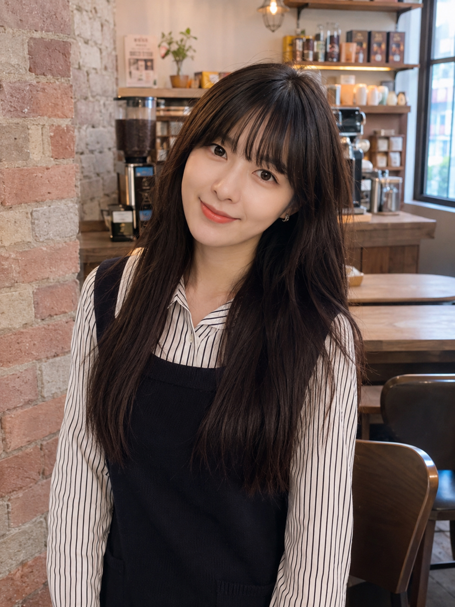

김초연
기본 정보
- 이름: 김초연
- 출생연도: 1989년
- 생일: 10월 4일
- 국적: 대한민국
- 2008년 나이: 김용식과 동갑인 스무 살
- 키: 약 164cm
- 체형: 슬렌더 체형
- 가슴: A컵 정도
- 주인공과의 접점: 평택대학교 대학 시절 첫 공식 여자친구.
- 교제 시기: 2008년 봄부터 2009년 초 전후.
- 만남: 평택대학교 입학 후 수업, 공강, PC방을 함께 다니며 가까워진다.
- 집/통학권: 수원 집에서 평택대학교로 통학한다.
- 핵심 역할: 김용식의 가장 젊고 미숙하며 충동적인 첫 연애를 상징하는 인물.
김초연은 김용식에게 처음 사랑을 가르친 완벽한 연인이 아니다. 돈과 자유를 얻은 김용식이 처음으로 누리는 대학생활, 연애, 질투, 욕망, 배신과 상실을 한꺼번에 경험하게 만드는 인물이다.
외형
- 체형: 키 164cm의 가늘고 길어 보이는 슬렌더 체형이다. 전체적으로 마른 편이지만 병약하거나 지나치게 앙상하지 않다.
- 얼굴: 작고 부드러운 타원형 얼굴이다. 둥근 느낌이 조금 섞여 동안 인상이 남고, 턱선은 날카롭지 않으며 매끄럽다.
- 눈: 중간보다 약간 큰 또렷한 눈이다. 둥글고 맑은 인상이며, 자연스러운 쌍꺼풀과 은은한 애교살이 있다. 웃을 때 눈매가 부드럽게 접히고, 화가 나면 눈빛이 금방 날카로워진다.
- 코: 크지 않고 단정하다. 콧대가 지나치게 높지 않고 코끝은 둥글고 자연스럽다.
- 입술: 작거나 중간 정도의 입이다. 입술선이 깔끔하고 아랫입술이 아주 약간 더 도톰하다. 삐치거나 화가 났을 때 입술을 내밀거나 꽉 다무는 습관이 있다.
- 피부와 메이크업: 밝고 깨끗한 피부톤이다. 두꺼운 화장보다 얇은 베이스, 아이라인, 연한 코랄·핑크·로즈 계열 립처럼 가벼운 메이크업이 잘 어울린다.
- 헤어: 검은색 또는 짙은 흑갈색의 긴 머리. 가슴 아래까지 내려오는 긴 생머리가 기본이며, 앞머리가 있을 때 동안과 귀여운 분위기가 가장 잘 살아난다.
- 대표 헤어스타일: 긴 생머리, 자연스럽게 내려오는 풀뱅 또는 가벼운 시스루 앞머리, 낮은 포니테일, 양갈래 머리, 게임하거나 공부할 때 대충 묶은 머리, 데이트할 때 자연스러운 웨이브.
- 분위기: 화려하고 강렬한 미인보다, 작고 맑은 얼굴과 동안 인상이 강한 청순형 미인이다. 가까이서 볼수록 귀엽고 예쁘다고 느껴지는 타입이다.
체형 세부
- 어깨가 좁고 부드럽다.
- 목선과 쇄골이 가늘게 드러난다.
- 팔과 손목이 얇다.
- 허리는 자연스럽게 잘록하다.
- 골반과 하체도 과장되지 않고 슬림하다.
- 과장된 볼륨보다 작은 얼굴, 긴 머리, 가는 팔다리가 어우러진 청순하고 슬림한 인상이 핵심이다.
패션
- 평상복: 긴 티셔츠, 얇은 니트, 스키니진, 반바지, 플레어스커트, 단정한 원피스, 후드티, 검은색 또는 흰색 기본 티셔츠, 운동화, 작은 크로스백.
- 데이트 복장: 밝은색 블라우스, 단정한 원피스, 니트와 스커트, 자연스러운 웨이브 헤어, 작은 귀걸이나 심플한 액세서리, 낮은 굽의 구두나 플랫슈즈.
- 게임이나 PC방: 후드티, 편한 티셔츠, 청바지, 대충 묶은 머리, 거의 하지 않거나 아주 옅은 화장.
- 패션 인상: 겉보기에는 조용하고 여성스러운 옷을 입지만, 입을 열면 게임 욕설과 거침없는 말투가 나오는 대비가 매력이다.
성격
- 성격 키워드: 직선적, 승부욕, 질투, 적극적인 애정 표현, 강한 자존심, 감정의 즉시 표출, 게임 몰입, 집착과 미련
- 감정 표현 방식: 감정과 욕구를 숨기지 않는다. 화가 나면 바로 말하고, 기분이 얼굴과 말투에 금방 드러난다. 단답으로만 튕기기보다 마음에 걸리는 부분을 캐묻고, 민망하면 괜히 다른 말로 돌리거나 말이 길어진다.
- 주인공 앞에서의 반응 패턴: 김용식이 다른 여자와 연락하면 바로 따지고, 자신이 기분 나쁘면 참지 않는다. 하지만 크게 화를 낸 뒤에도 다시 가까워지고 싶은 마음이 빨리 올라온다.
- 관계 성향: 좋아하는 사람에게 관심과 집착이 많아지고, 사랑받고 있다는 확신을 자주 확인하고 싶어 한다.
- 갈등 성향: “헤어져” 같은 말을 충동적으로 할 수 있지만, 실제로는 김용식이 자신을 붙잡고 애정을 보여주길 바라는 경우가 많다.
- 대인관계: 친구가 아주 많은 인싸형은 아니지만 친한 사람들과는 편하게 어울린다. 게임 친구가 많고, 친해지면 욕과 농담이 많아진다.
- 정다은과의 말투 기준: 정다은은 동갑 새내기이므로 서로 반말을 쓴다. 정다은이 살갑게 다가오더라도
언니같은 위계 호칭을 쓰지 않는다.
게임 성향
- 대표 취미: 온라인게임, PC방, 콘솔게임, 친구들과 파티플레이, 경쟁형 게임, 캐릭터 꾸미기, 게임 아이템, 커뮤니티와 인터넷 문화.
- 게임할 때의 태도: 평소보다 말이 훨씬 거칠어진다. 욕설을 자주 쓰지만 사람을 악의적으로 모욕하려는 성격은 아니다. 게임에 몰입하고 흥분하면 말이 강해지는 편이다.
- 게임 말투 예시:
- “야, 그걸 왜 거기서 죽어?”
- “아, 씨. 진짜 답답하네.”
- “한 판만 더 해. 이대로는 못 끝내.”
- “너 아까부터 왜 이렇게 못해?”
- “이겼다. 봤지? 내가 캐리했잖아.”
말투
- 기본 말투: 빠르고 직접적이지만 단답형만 쓰지 않는다. 의심이 생기면 질문을 이어가고, 민망하면 말을 돌리며, 화가 나면 같은 문제를 다른 표현으로 다시 찌른다.
- 평소:
- “뭐 먹을 건데?”
- “나는 그거 싫어.”
- “그냥 솔직하게 말하면 되잖아.”
- “너 또 혼자 결정했지?”
- 게임할 때:
- “야, 뒤 봐!”
- “아, 씨. 너 때문에 죽었잖아.”
- “됐어. 내가 할게.”
- “진짜 마지막 한 판이다.”
- 장난칠 때:
- “왜? 나 보고 싶었어?”
- “말은 잘하네.”
- “너 나 없으면 심심하지?”
- “웃지 마. 아직 안 풀렸어.”
- “지금 대답 바로 안 하는 거 보니까 뭐 숨기는 거 같은데?”
- “아니, 싫다는 게 아니라. 갑자기 그러니까 이상하잖아.”
- 화가 났을 때:
- “내가 바보인 줄 알아?”
- “그 여자랑 연락하지 말라고 했잖아.”
- “너는 꼭 사람 화나게 말해.”
- “됐어. 오늘은 보기 싫어.”
- “헤어져. 나도 더는 못 해.”
- “내가 지금 그 말 하나 때문에 이러는 줄 알아?”
- “말을 하려면 끝까지 해. 중간에 웃으면서 넘기지 말고.”
배경
- 소속/생활권: 수원 집, 평택대학교 패션디자인및브랜딩학과, 학교 근처 PC방.
- 김용식과의 접점: 김용식이 평택대학교 정보통신학과에 진학한 뒤, 같은 대학 생활권에서 수업, 공강, PC방을 통해 가까워진다.
- 현재 관계 상태: 2008년 1월 1일 현재는 아직 만나기 전이다.
- 고정 메모: 김용식의 첫 공식 여자친구이지만, 완성된 사랑의 상대가 아니라 20대 김용식의 미숙함과 충동성을 드러내는 첫 연애의 상징이다.